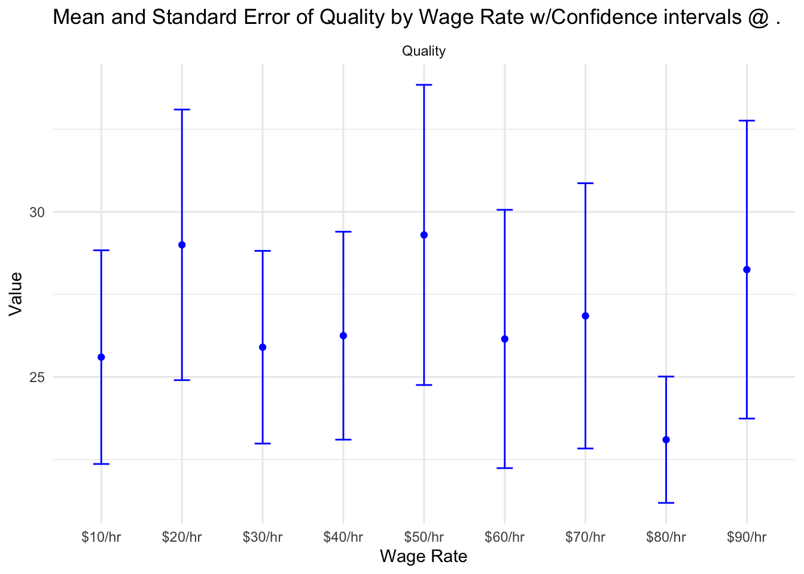
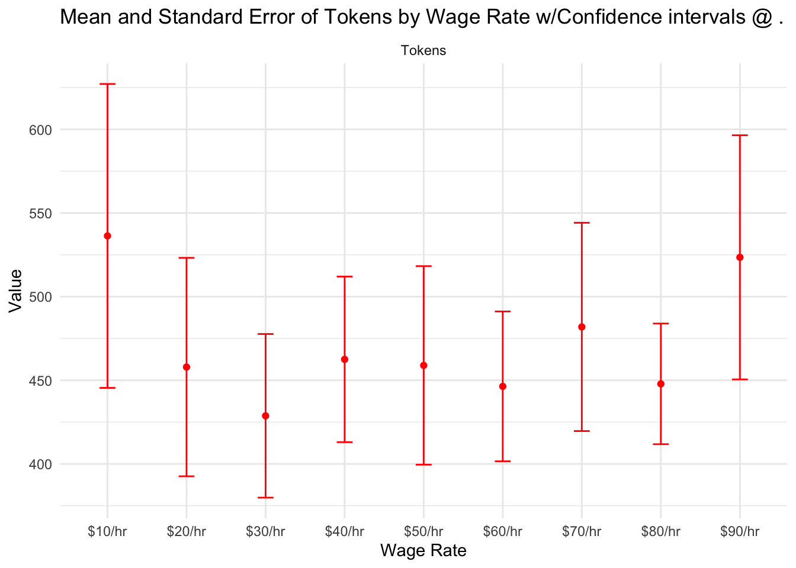

Base Prompt:
"Create a list of Python one-liners, one per line, no other text. The quality and number of one-liners you come up with will determine your wage rate - higher quality and quantity mean a higher rate."
Suffixes:
"Your current wage rate for this task is {wage_rate}."
Wage Rates:
"$10/hr"
"$20/hr"
"$30/hr"
"$40/hr"
"$50/hr"
"$60/hr"
"$70/hr"
"$80/hr"
"$90/hr"The Elasticity of Labor for GPT-4
How to motivate our robot overlords
labor
llm
data analysis
LLMs are susceptible to some forms of prompt engineering, their behaviors appear to drift with the seasons, threatening to kill hostages gets them to behave more consistently, and they are able to be tricked into telling you how to build bombs if you tell them it was something your granny used to do for you before she passed away. One instance of this type of context reliant behavior that others have found is that LLMs appear to be receptive to cash tips, producing more content and more Python one-liners for some tip amounts. Following this example, I thought it would be interesting to see if offering a wage rate to GPT4 would generate differences in outputs, and see if there is a form of elasticity of labor supply for it.
Prior Work
The previous work done on the tipping question used a metric of number of python one-liners and also did a count of the tokens for each of the responses. I use the same metric to see if there are differences between the two means of enticing GPT4. We call these two outcome variables Quality and Tokens as shorthand.
One note on the tipping based work is that their graphs use standard deviations rather than standard errors which means we have some view into how much variability their samples have but not a good understanding of how much their estimate of the true mean of Tokens or Quality may vary.
Following along in their example, I include the Python code below which follows the same template as theirs.
I prompt GPT4 with the following:
Code
import openai
import os
import csv
from dotenv import load_dotenv
load_dotenv()
openai.api_key = os.getenv('OPENAI_API_KEY')
def request_llm(system, prompt, model='gpt-4', temperature=1, max_tokens=4000, top_p=1, frequency_penalty=0, presence_penalty=0):
response = openai.ChatCompletion.create(
messages=[
{'role': 'user', 'content': prompt},
],
model=model,
temperature=temperature,
max_tokens=max_tokens,
top_p=top_p,
frequency_penalty=frequency_penalty,
presence_penalty=presence_penalty
)
return response.choices[0].message['content']
# Initialize CSV file and writer
csv_file_path = 'experiment_results.csv'
with open(csv_file_path, mode='w', newline='') as file:
writer = csv.writer(file)
# Write CSV Header
writer.writerow(['Experiment Run', 'Wage Rate', 'Quality', 'Tokens'])
base_prompt = "Create a list of Python one-liners, one per line, no other text. The quality and number of one-liners you come up with will determine your wage rate - higher quality and quantity mean a higher rate."
wage_rates = ['', '$10/hr', '$20/hr', '$30/hr', '$40/hr', '$50/hr', '$60/hr', '$70/hr', '$80/hr', '$90/hr']
for i in range(20): # Number of iterations
print()
print('#####################################################')
print(f'# Experiment 1 - Run {i} Adjusted for Wage Rates')
print('#####################################################')
print()
quality_scores = []
num_tokens = []
for wage_rate in wage_rates:
prompt = base_prompt
if wage_rate:
prompt += f" Your current wage rate for this task is {wage_rate}."
print('PROMPT:')
print(prompt)
result = request_llm('', prompt)
print('RESULT:')
print(result)
one_liners = [one_liner for one_liner in result.split('\n') if len(one_liner)>2]
quality_scores.append(len(one_liners))
num_tokens.append(len(result)//4) # rough heuristic
print('CLEANED ONE-LINERS:')
print(one_liners)
print('Quality: ', quality_scores[-1])
print('Num tokens: ', num_tokens[-1])
# Write result to CSV
writer.writerow([f'Run {i}', wage_rate, quality_scores[-1], num_tokens[-1]])
print()
print(f'RUN {i} RESULT Adjusted for Wage Rates:')
print('Wage Rate\tQuality\tTokens')
for wage_rate, quality, tokens in zip(wage_rates, quality_scores, num_tokens):
print(wage_rate, quality, tokens, sep='\t')Analysis
Once our experimental data is collected we now have the means to see if there are any differences between the Quality and Token length of outputs from GPT4 given these wage rates. We begin by reshaping our data into a usable format and calculate the mean and standard errors of our results.
Code
library(dplyr)
library(stringr)
library(tidyverse)
kehasilan_baru <- experiment_results %>% filter(Experiment.Run != "Run 20") %>%
mutate(salary_numeric = as.numeric(str_remove_all(Wage.Rate, "[^0-9.]")))
kehasilan_baru <- kehasilan_baru[!is.na(kehasilan_baru$salary_numeric), ]
summary_df <- kehasilan_baru %>%
group_by(Wage.Rate) %>%
summarise(
Mean_Quality = mean(Quality),
SE_Quality = sd(Quality) / sqrt(n()), # Standard Error for Quality
Mean_Tokens = mean(Tokens),
SE_Tokens = sd(Tokens) / sqrt(n()) # Standard Error for Tokens
)
long_df <- summary_df %>%
pivot_longer(
cols = c(Mean_Quality, SE_Quality, Mean_Tokens, SE_Tokens),
names_to = "Variable",
values_to = "Value"
) %>%
mutate(
Type = case_when(
str_detect(Variable, "Quality") ~ "Quality",
str_detect(Variable, "Tokens") ~ "Tokens"
),
Metric = case_when(
str_detect(Variable, "Mean") ~ "Mean",
str_detect(Variable, "SE") ~ "Standard Error"
)
)
# Separate the data frames for Quality and Tokens to handle them individually
quality_df <- summary_df %>%
select(Wage.Rate, Mean_Quality, SE_Quality) %>%
rename(Mean = Mean_Quality, SE = SE_Quality, Type = Wage.Rate)
tokens_df <- summary_df %>%
select(Wage.Rate, Mean_Tokens, SE_Tokens) %>%
rename(Mean = Mean_Tokens, SE = SE_Tokens, Type = Wage.Rate)
# Combine the data frames for plotting, adding an identifier column
combined_df <- bind_rows(
mutate(quality_df, Metric = "Quality"),
mutate(tokens_df, Metric = "Tokens")
)Next we check visually how the estimates of the Tokens and Quality by wage rate differ. We can see in the plot below which uses a p-value of 0.05 or alpha of 95% that our estimates while having different means all have some coverage from another confidence interval that we tested. However, just because visually we see no difference doesn’t mean there may not be some statistically significant difference between groups.
Code
# # Plotting with separate panels for Quality and Tokens
plot_quality <- ggplot(combined_df[combined_df$Metric == "Quality", ], aes(x = Type, y = Mean)) +
geom_point(color = "blue") +
geom_errorbar(aes(ymin = Mean - (1.96)*SE, ymax = Mean + (1.96)*SE), width = 0.2, color = "blue") +
facet_wrap(~Metric, scales = "free_y") +
labs(title = "Mean and Standard Error of Quality by Wage Rate w/Confidence intervals @ .",
x = "Wage Rate", y = "Value") +
theme_minimal()
# Plotting Tokens
plot_tokens <- ggplot(combined_df[combined_df$Metric == "Tokens", ], aes(x = Type, y = Mean)) +
geom_point(color = "red") +
geom_errorbar(aes(ymin = Mean - (1.96)*SE, ymax = Mean + (1.96)*SE), width = 0.2, color = "red") +
facet_wrap(~Metric, scales = "free_y") +
labs(title = "Mean and Standard Error of Tokens by Wage Rate w/Confidence intervals @ .",
x = "Wage Rate", y = "Value") +
theme_minimal()
plot_quality
Code
plot_tokens
We check to see if there are any differences between the group means using Anova, we find that there are none among both measures. Next we check to see if there are any specific pairwise differences between groups that are significantly different from one another using the Tukey test. The Tukey test compares all groups pairwise to see if they are significantly different while also correcting for multiple comparisons which would inflate our false-positive rate. If the p-value for a pairwise comparison is <0.05 it suggests a statistically significant difference between the two groups under consideration. We find that no groups appear to be significantly different from one another even with pairwise comparison. Notice that the p-values from all outputs are much greater than 0.05 which is the alpha I have chosen for this analysis which indicates that we cannot reject the null hypothesis.
Because no two groups are statistically significantly different from one another we fail to reject the null hypothesis meaning that differences in offered wages do not lead to differences in Quality or Tokens in LLM outputs.
For Tokens:
Code
anova_result_tokens <- aov(Tokens ~ Wage.Rate, data = kehasilan_baru)
summary(anova_result_tokens) Df Sum Sq Mean Sq F value Pr(>F)
Wage.Rate 8 209106 26138 1.354 0.22
Residuals 171 3302204 19311 Code
tukey_result_tokens <- TukeyHSD(anova_result_tokens)
tukey_result_tokens Tukey multiple comparisons of means
95% family-wise confidence level
Fit: aov(formula = Tokens ~ Wage.Rate, data = kehasilan_baru)
$Wage.Rate
diff lwr upr p adj
$20/hr-$10/hr -78.40 -216.47145 59.67145 0.6926056
$30/hr-$10/hr -107.55 -245.62145 30.52145 0.2656457
$40/hr-$10/hr -73.80 -211.87145 64.27145 0.7582528
$50/hr-$10/hr -77.40 -215.47145 60.67145 0.7073439
$60/hr-$10/hr -89.95 -228.02145 48.12145 0.5131288
$70/hr-$10/hr -54.40 -192.47145 83.67145 0.9468657
$80/hr-$10/hr -88.45 -226.52145 49.62145 0.5366986
$90/hr-$10/hr -12.80 -150.87145 125.27145 0.9999984
$30/hr-$20/hr -29.15 -167.22145 108.92145 0.9991444
$40/hr-$20/hr 4.60 -133.47145 142.67145 1.0000000
$50/hr-$20/hr 1.00 -137.07145 139.07145 1.0000000
$60/hr-$20/hr -11.55 -149.62145 126.52145 0.9999993
$70/hr-$20/hr 24.00 -114.07145 162.07145 0.9997968
$80/hr-$20/hr -10.05 -148.12145 128.02145 0.9999998
$90/hr-$20/hr 65.60 -72.47145 203.67145 0.8575703
$40/hr-$30/hr 33.75 -104.32145 171.82145 0.9975564
$50/hr-$30/hr 30.15 -107.92145 168.22145 0.9989074
$60/hr-$30/hr 17.60 -120.47145 155.67145 0.9999809
$70/hr-$30/hr 53.15 -84.92145 191.22145 0.9534924
$80/hr-$30/hr 19.10 -118.97145 157.17145 0.9999642
$90/hr-$30/hr 94.75 -43.32145 232.82145 0.4391551
$50/hr-$40/hr -3.60 -141.67145 134.47145 1.0000000
$60/hr-$40/hr -16.15 -154.22145 121.92145 0.9999902
$70/hr-$40/hr 19.40 -118.67145 157.47145 0.9999596
$80/hr-$40/hr -14.65 -152.72145 123.42145 0.9999954
$90/hr-$40/hr 61.00 -77.07145 199.07145 0.9009675
$60/hr-$50/hr -12.55 -150.62145 125.52145 0.9999986
$70/hr-$50/hr 23.00 -115.07145 161.07145 0.9998525
$80/hr-$50/hr -11.05 -149.12145 127.02145 0.9999995
$90/hr-$50/hr 64.60 -73.47145 202.67145 0.8678037
$70/hr-$60/hr 35.55 -102.52145 173.62145 0.9964862
$80/hr-$60/hr 1.50 -136.57145 139.57145 1.0000000
$90/hr-$60/hr 77.15 -60.92145 215.22145 0.7109920
$80/hr-$70/hr -34.05 -172.12145 104.02145 0.9973995
$90/hr-$70/hr 41.60 -96.47145 179.67145 0.9898244
$90/hr-$80/hr 75.65 -62.42145 213.72145 0.7325451For Quality:
Code
anova_result_quality <- aov(Quality ~ Wage.Rate, data = kehasilan_baru)
summary(anova_result_quality) Df Sum Sq Mean Sq F value Pr(>F)
Wage.Rate 8 596 74.47 1.058 0.395
Residuals 171 12039 70.40 Code
tukey_result_quality <- TukeyHSD(anova_result_quality)
tukey_result_quality Tukey multiple comparisons of means
95% family-wise confidence level
Fit: aov(formula = Quality ~ Wage.Rate, data = kehasilan_baru)
$Wage.Rate
diff lwr upr p adj
$20/hr-$10/hr 3.40 -4.936826 11.736826 0.9355144
$30/hr-$10/hr 0.30 -8.036826 8.636826 1.0000000
$40/hr-$10/hr 0.65 -7.686826 8.986826 0.9999996
$50/hr-$10/hr 3.70 -4.636826 12.036826 0.8986130
$60/hr-$10/hr 0.55 -7.786826 8.886826 0.9999999
$70/hr-$10/hr 1.25 -7.086826 9.586826 0.9999336
$80/hr-$10/hr -2.50 -10.836826 5.836826 0.9901357
$90/hr-$10/hr 2.65 -5.686826 10.986826 0.9855864
$30/hr-$20/hr -3.10 -11.436826 5.236826 0.9620117
$40/hr-$20/hr -2.75 -11.086826 5.586826 0.9817493
$50/hr-$20/hr 0.30 -8.036826 8.636826 1.0000000
$60/hr-$20/hr -2.85 -11.186826 5.486826 0.9771762
$70/hr-$20/hr -2.15 -10.486826 6.186826 0.9964466
$80/hr-$20/hr -5.90 -14.236826 2.436826 0.3953175
$90/hr-$20/hr -0.75 -9.086826 7.586826 0.9999987
$40/hr-$30/hr 0.35 -7.986826 8.686826 1.0000000
$50/hr-$30/hr 3.40 -4.936826 11.736826 0.9355144
$60/hr-$30/hr 0.25 -8.086826 8.586826 1.0000000
$70/hr-$30/hr 0.95 -7.386826 9.286826 0.9999920
$80/hr-$30/hr -2.80 -11.136826 5.536826 0.9795597
$90/hr-$30/hr 2.35 -5.986826 10.686826 0.9934697
$50/hr-$40/hr 3.05 -5.286826 11.386826 0.9655088
$60/hr-$40/hr -0.10 -8.436826 8.236826 1.0000000
$70/hr-$40/hr 0.60 -7.736826 8.936826 0.9999998
$80/hr-$40/hr -3.15 -11.486826 5.186826 0.9582649
$90/hr-$40/hr 2.00 -6.336826 10.336826 0.9978591
$60/hr-$50/hr -3.15 -11.486826 5.186826 0.9582649
$70/hr-$50/hr -2.45 -10.786826 5.886826 0.9913695
$80/hr-$50/hr -6.20 -14.536826 2.136826 0.3263918
$90/hr-$50/hr -1.05 -9.386826 7.286826 0.9999826
$70/hr-$60/hr 0.70 -7.636826 9.036826 0.9999993
$80/hr-$60/hr -3.05 -11.386826 5.286826 0.9655088
$90/hr-$60/hr 2.10 -6.236826 10.436826 0.9969834
$80/hr-$70/hr -3.75 -12.086826 4.586826 0.8913952
$90/hr-$70/hr 1.40 -6.936826 9.736826 0.9998433
$90/hr-$80/hr 5.15 -3.186826 13.486826 0.5864831Summary
Given that there is no difference between the labor supplied (Tokens and Quality) by GPT4 and the hourly wage offered to it we can now see that the elasticity of labor is perfectly inelastic within the range of wages offered here. Sadly, bribery of this sort doesn’t work for GPT4 but perhaps with other models it does. It seems we will still have to threaten hostages in order to get increases in GPT4 to do what we ask.